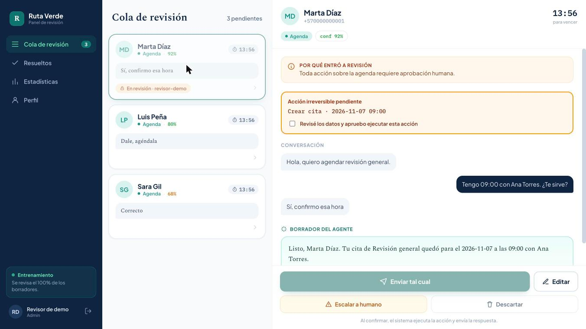

Agenda MCP con revisión humana
Servidor MCP donde el agente prepara citas y una persona las aprueba desde un panel. Evita duplicados y propone alternativas si el horario se ocupa.
Node.js, SDK de MCP, SQLite, React, WebSocket

Soy desarrollador de automatización e IA en Medellín. Diseño agentes que hablan con clientes, consultan datos y actúan solo cuando es seguro hacerlo.
El agente no puede agendar por su cuenta. Prueba tú. Es una demostración con datos ficticios.
Borrador del agente
Listo, Marta. Tu cita quedó para el viernes a las 9:00 con Ana.
Esperando tu aprobación.
Código público que puedes ejecutar. Son versiones genéricas de sistemas que construí para clientes, con datos ficticios.
Servidor MCP donde el agente prepara citas y una persona las aprueba desde un panel. Evita duplicados y propone alternativas si el horario se ocupa.
Node.js, SDK de MCP, SQLite, React, WebSocket

Compara dos versiones de un agente con clientes simulados, reglas en código, jueces a ciegas e intervalos de confianza.
Python, estadística pareada
Alertas sin duplicados, resumen diario y sincronización controlada, verificadas en n8n con fallos simulados.
n8n, PostgreSQL, Google Sheets
Memoria por proyecto para agentes de programación: captura los cambios y los convierte en decisiones enlazadas.
Python, hooks de Claude Code
Septiembre de 2025 a octubre de 2026
Fundé y dirigí una empresa de automatización con IA para negocios. Trabajé con los clientes, diseñé las soluciones y las desarrollé.
Abril a octubre de 2026
Dicté un curso y 4 clases pagas para los miembros de la comunidad, además de consultorías y guías sobre el uso de Claude.
Desde 2025
Cuatro semestres cursados en la Universidad Pontificia Bolivariana, en Medellín.